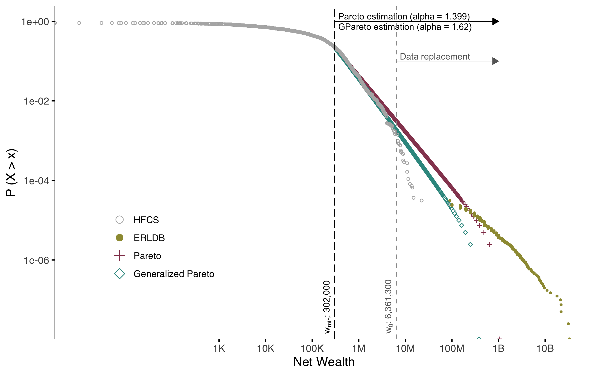
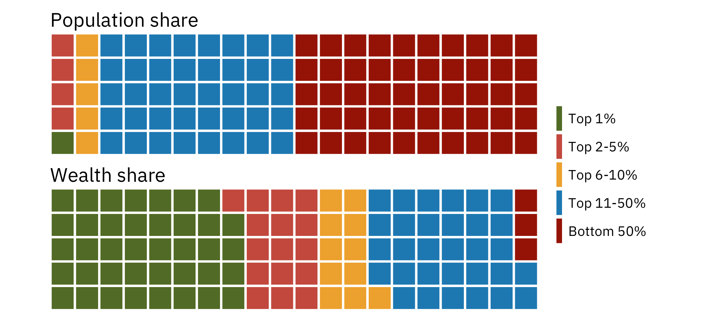
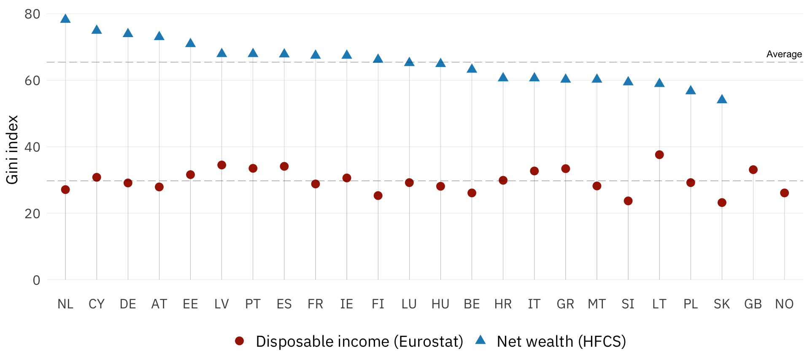
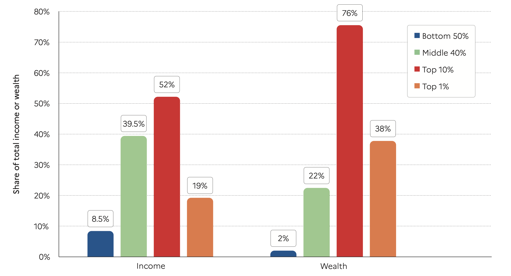
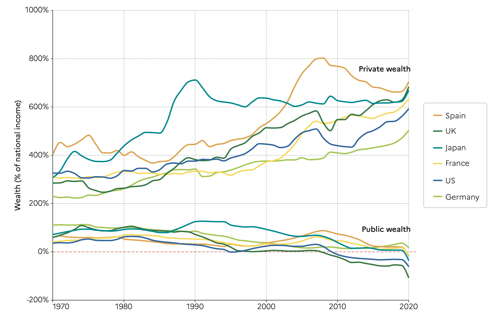
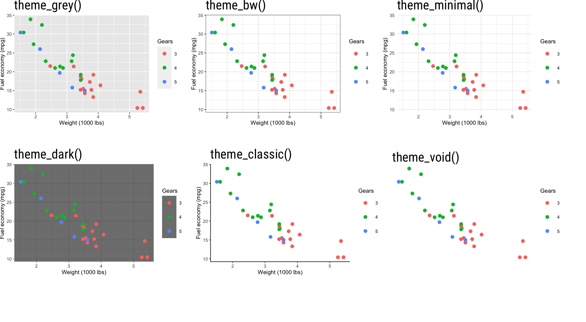

data |> ggplot(aes(x = var1, y = var2)) |>
geom_line() +
theme_minimal() +
theme(plot.background = element_rect(fill = "red"),
panel.grid.x = element_blank(),
axis.line.x = element_line(linewidth = 1.2),
legend.text = element_text(size = 7),
legend.position = "top")
Economic Policy Visualization
Wealth · Themes
Definition of private wealth
Non-financial assets
- Dwellings (owner-occupied residence, other real estate)
- Consumer durables (vehicles, etc.)
- Valuables
- Intellectual property
Financial assets
- Currency and deposits
- Net equity in own unincorporated business
- Mututal funds and investment funds
- (Private) Pensions funds
- Bonds and other debt securities
- Shares and other equity
- Life insurance funds -Other financial assets
Liabilities
- Owner-occupied residence loans
- Consumer durable loans (e.g. for vehicles)
- Other investment loans (collateralized)
- Other loans (e.g. education loans)
No human, social and cultural capital; No public social security pensions (marketable vs. augmented wealth)
Source: OECD (2013)
HFCS sampling and underreporting
- Target population in Austria: 3.9 million households
- Gross sample in HFCS 2017: 6,280 households
- Realized interviews: 3,072 households
- Response rate in HFCS 2017: approx. 50%
- Residual: refused interviews, invalid addresses, households not available, etc.
- Response refusal correlates with wealth and is highest at the top (Vermeulen, 2016)
- Wealthy households own a greater number of assets and miss some components more easily (Kennickell/Woodburn, 1999)
Upstream strategy against underreporting: Oversampling
- Undercoverage and Underreporting
- Oversampling is crucial for wealth surveys
- Oversampling in HFCS 2017: 🇧🇪 🇨🇾 🇩🇪 🇪🇪 🇪🇸 🇫🇮 🇫🇷 🇬🇷 🇭🇷 🇭🇺 🇮🇪 🇱🇻 🇱🇹 🇱🇺 🇵🇱 🇵🇹 🇸🇰
- No oversampling: 🇦🇹 🇮🇹 🇲🇹 🇳🇱 🇸🇮
- How does oversampling work?
- External personal wealth data (🇫🇷 🇪🇸)
- List of streets with high-income people (🇩🇪 🇸🇰)
- Income tax data (🇱🇺 20% of the sample from top 10% earners)
- Regions with higher average income (🇵🇱)
Downstream strategy against underreporting: Pareto estimation
- Pareto-Distribution is a sensible approximation to the distribution of large wealth
- Two parameters:
- Threshold for “large” wealth \(m\)
- Pareto-Index \(\alpha\)
\[P_i(x_i) = Pr(X_i \leqslant x_i) = 1 - \left(\frac{m_i}{x_i}\right)^{\alpha_i}\] \[\forall ~\text{implicates} ~i = 1...5 \wedge x_i \geqslant m_i\]
A smaller \(\alpha\) means greater inequality. Empirically, \(\alpha\) often is around 1.5 for wealth.
Reading recommendation: Gabaix (2016)
European Rich List Database (ERLDB) and HFCS

Source: Disslbacher et al. (2020)
Cumulative density function of wealth in Germany

Source: Disslbacher et al. (2020)
Net wealth distribution in Austria
── Attaching core tidyverse packages ──────────────────────── tidyverse 2.0.0 ──
✔ dplyr 1.1.2 ✔ readr 2.1.4
✔ forcats 1.0.0 ✔ stringr 1.5.0
✔ ggplot2 3.4.3 ✔ tibble 3.2.1
✔ lubridate 1.9.2 ✔ tidyr 1.3.0
✔ purrr 1.0.2
── Conflicts ────────────────────────────────────────── tidyverse_conflicts() ──
✖ dplyr::filter() masks stats::filter()
✖ dplyr::lag() masks stats::lag()
ℹ Use the conflicted package (<http://conflicted.r-lib.org/>) to force all conflicts to become errors
Income and wealth inequality across Europe
Warning: Using `size` aesthetic for lines was deprecated in ggplot2 3.4.0.
ℹ Please use `linewidth` instead.Warning: Removed 2 rows containing missing values (`geom_segment()`).Warning: Removed 2 rows containing missing values (`geom_point()`).
Global income and wealth inequality

Source: Chancel et al. (2022)
Private and public wealth

Source: Chancel et al. (2022)
Themes

Themes

Main theme components
| Plot | Panel | Axis | Legend | Strip |
|---|---|---|---|---|
| background | background | title | background | background |
| title | border | text | key | placement |
| subtitle | grid | ticks | title | text |
| caption | spacing | line | text | |
| margin | position |
Bibliography
References
Chancel, Lucas/Piketty, Thomas/Saez, Emmanuel/Zucman, Gabriel (2022). World inequality report 2022. World Inequality Lab.
Disslbacher, Franziska/Ertl, Michael/List, Emanuel/Mokre, Patrick/Schnetzer, Matthias (2020). On top of the top - adjusting wealth distributions using national rich lists (Working Paper Series No. 20). INEQ.
Gabaix, Xavier (2016). Power laws in economics: An introduction. Journal of Economic Perspectives, 30(1), 185–206. DOI: 10.1257/jep.30.1.185
Kennickell, Arthur B./Woodburn, R. Louise (1999). Consistent weight design for the 1989, 1992 and 1995 SCFs, and the distribution of wealth. Review of Income and Wealth, 45(2), 193–215. DOI: 10.1111/j.1475-4991.1999.tb00328.x
OECD (2013). OECD guidelines for micro statistics on household wealth. OECD. DOI: 10.1787/9789264194878-en
Vermeulen, Philip (2016). Estimating the top tail of the wealth distribution. The American Economic Review, 106(5), 646–650. DOI: 10.1257/aer.p20161021